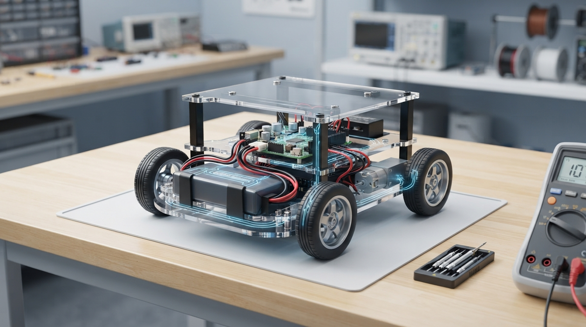

Robots do not move because “electricity” is mysterious. They move because a source, circuit, driver, and motor transfer energy through a complete and measurable path.
In Class 6, Professor OS helps learners build that model step by step:
• Use voltage, current, and resistance without overextending the water-pipe analogy.
• Apply Ohm’s law and power equations with units and sanity checks.
• Size a resistor for an LED indicator under realistic supply variation.
• Understand why motor startup and stall current differ from normal operation.
• Practice safer multimeter reasoning and connect simplified calculations to an H-bridge.
The included Python lab reinforces the resistor model, while the RoboRover challenge asks students to predict outcomes before checking them. Try the simulation first, then complete the low-voltage measurement activity only with appropriate supervision and current-limited equipment.
Explore Professor OS: https://connect.vin/professor-os
#Robotics #EngineeringEducation #Electronics #ProfessorOS
In Class 6, Professor OS helps learners build that model step by step:
• Use voltage, current, and resistance without overextending the water-pipe analogy.
• Apply Ohm’s law and power equations with units and sanity checks.
• Size a resistor for an LED indicator under realistic supply variation.
• Understand why motor startup and stall current differ from normal operation.
• Practice safer multimeter reasoning and connect simplified calculations to an H-bridge.
The included Python lab reinforces the resistor model, while the RoboRover challenge asks students to predict outcomes before checking them. Try the simulation first, then complete the low-voltage measurement activity only with appropriate supervision and current-limited equipment.
Explore Professor OS: https://connect.vin/professor-os
#Robotics #EngineeringEducation #Electronics #ProfessorOS

Class 6: Electricity for Roboticists—From Voltage and Current to Motor Drivers
A rigorous Professor OS lesson connects voltage, current, resistance, power, LED sizing, H-bridges, meter safety, and motor behavior through calculations and a Python lab.